KrigingRandomVector¶
-
class
KrigingRandomVector(*args)¶ KrigingRandom vector, a conditioned Gaussian process.
- Parameters
- krigingResult
KrigingResult Structure that contains elements of computation of a kriging algorithm
- points1-d or 2-d sequence of float
- krigingResult
Notes
KrigingRandomVector helps to create Gaussian random vector,
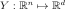
, with stationary covariance function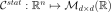
, conditionally to some observations.Let
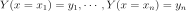
be the observations of the Gaussian process. We assume the same Gaussian prior as in theKrigingAlgorithm: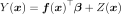
with
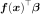
a general linear model,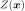
a zero-mean Gaussian process with a stationary autocorrelation function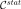
: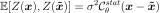
The objective is to generate realizations of the random vector
 , on new points
, on new points 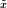
, conditionally to these observations. For that purpose,KrigingAlgorithmbuild such a prior and stores results in aKrigingResultstructure on a first step. This structure is given as input argument.Then, in a second step, both the prior and the covariance on input points , conditionally to the previous observations, are evaluated (respectively
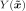
and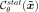
).Finally realizations are randomly generated by the Gaussian distribution
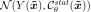
KrigingRandomVector class inherits from
UsualRandomVector. Thus it stores the previous distribution and returns elements thanks to that distribution (realization, mean, covariance, sample…)Examples
Create the model
 and the samples:
and the samples:>>> import openturns as ot >>> f = ot.SymbolicFunction(['x'], ['x * sin(x)']) >>> sampleX = [[1.0], [2.0], [3.0], [4.0], [5.0], [6.0], [7.0], [8.0]] >>> sampleY = f(sampleX)
Create the algorithm:
>>> basis = ot.Basis([ot.SymbolicFunction(['x'], ['x']), ot.SymbolicFunction(['x'], ['x^2'])]) >>> covarianceModel = ot.SquaredExponential([1.0]) >>> covarianceModel.setActiveParameter([]) >>> algo = ot.KrigingAlgorithm(sampleX, sampleY, covarianceModel, basis) >>> algo.run()
Get the results:
>>> result = algo.getResult() >>> rvector = ot.KrigingRandomVector(result, [[0.0]])
Get a sample of the random vector:
>>> sample = rvector.getSample(5)
Methods
getAntecedent(self)Accessor to the antecedent RandomVector in case of a composite RandomVector.
getClassName(self)Accessor to the object’s name.
getCovariance(self)Accessor to the covariance of the RandomVector.
getDescription(self)Accessor to the description of the RandomVector.
getDimension(self)Accessor to the dimension of the RandomVector.
getDistribution(self)Accessor to the distribution of the RandomVector.
getDomain(self)Accessor to the domain of the Event.
getFunction(self)Accessor to the Function in case of a composite RandomVector.
getId(self)Accessor to the object’s id.
getKrigingResult(self)Return the kriging result structure.
getMarginal(self, \*args)Get the random vector corresponding to the
 marginal component(s).
marginal component(s).getMean(self)Accessor to the mean of the RandomVector.
getName(self)Accessor to the object’s name.
getOperator(self)Accessor to the comparaison operator of the Event.
getParameter(self)Accessor to the parameter of the distribution.
getParameterDescription(self)Accessor to the parameter description of the distribution.
getProcess(self)Get the stochastic process.
getRealization(self)Compute a realization of the conditional Gaussian process (conditional on the learning set).
getSample(self, \*args)Compute a sample of realizations of the conditional Gaussian process (conditional on the learning set).
getShadowedId(self)Accessor to the object’s shadowed id.
getThreshold(self)Accessor to the threshold of the Event.
getVisibility(self)Accessor to the object’s visibility state.
hasName(self)Test if the object is named.
hasVisibleName(self)Test if the object has a distinguishable name.
isComposite(self)Accessor to know if the RandomVector is a composite one.
isEvent(self)Whether the random vector is an event.
setDescription(self, description)Accessor to the description of the RandomVector.
setName(self, name)Accessor to the object’s name.
setParameter(self, parameters)Accessor to the parameter of the distribution.
setShadowedId(self, id)Accessor to the object’s shadowed id.
setVisibility(self, visible)Accessor to the object’s visibility state.
-
__init__(self, *args)¶ Initialize self. See help(type(self)) for accurate signature.
-
getAntecedent(self)¶ Accessor to the antecedent RandomVector in case of a composite RandomVector.
- Returns
- antecedent
RandomVector Antecedent RandomVector
 in case of a
in case of a
CompositeRandomVectorsuch as: .
.
- antecedent
-
getClassName(self)¶ Accessor to the object’s name.
- Returns
- class_namestr
The object class name (object.__class__.__name__).
-
getCovariance(self)¶ Accessor to the covariance of the RandomVector.
- Returns
- covariance
CovarianceMatrix Covariance of the considered
UsualRandomVector.
- covariance
Examples
>>> import openturns as ot >>> distribution = ot.Normal([0.0, 0.5], [1.0, 1.5], ot.CorrelationMatrix(2)) >>> randomVector = ot.RandomVector(distribution) >>> ot.RandomGenerator.SetSeed(0) >>> print(randomVector.getCovariance()) [[ 1 0 ] [ 0 2.25 ]]
-
getDescription(self)¶ Accessor to the description of the RandomVector.
- Returns
- description
Description Describes the components of the RandomVector.
- description
-
getDimension(self)¶ Accessor to the dimension of the RandomVector.
- Returns
- dimensionpositive int
Dimension of the RandomVector.
-
getDistribution(self)¶ Accessor to the distribution of the RandomVector.
- Returns
- distribution
Distribution Distribution of the considered
UsualRandomVector.
- distribution
Examples
>>> import openturns as ot >>> distribution = ot.Normal([0.0, 0.0], [1.0, 1.0], ot.CorrelationMatrix(2)) >>> randomVector = ot.RandomVector(distribution) >>> ot.RandomGenerator.SetSeed(0) >>> print(randomVector.getDistribution()) Normal(mu = [0,0], sigma = [1,1], R = [[ 1 0 ] [ 0 1 ]])
-
getDomain(self)¶ Accessor to the domain of the Event.
- Returns
- domain
Domain Describes the domain of an event.
- domain
-
getFunction(self)¶ Accessor to the Function in case of a composite RandomVector.
- Returns
- function
Function Function used to define a
CompositeRandomVectoras the image through this function of the antecedent:
.
- function
-
getId(self)¶ Accessor to the object’s id.
- Returns
- idint
Internal unique identifier.
-
getKrigingResult(self)¶ Return the kriging result structure.
- Returns
- krigResult
KrigingResult The structure containing the elements of a KrigingAlgorithm.
- krigResult
-
getMarginal(self, *args)¶ Get the random vector corresponding to the
marginal component(s).- Parameters
- iint or list of ints,

Indicates the component(s) concerned.
 is the dimension of the
RandomVector.
is the dimension of the
RandomVector.
- iint or list of ints,
- Returns
- vector
RandomVector RandomVector restricted to the concerned components.
- vector
Notes
Let’s note
 a random vector and
a random vector and
![I \in [1,n]](../../../_images/math/51c159570d2ffbdc697d35ca4247b617daadb12c.svg) a set of indices. If
a set of indices. If  is a
is a
UsualRandomVector, the subvector is defined by . If is a
. If is a
CompositeRandomVector, defined by with  ,
,
 some scalar functions, the subvector is
some scalar functions, the subvector is
 .
.Examples
>>> import openturns as ot >>> distribution = ot.Normal([0.0, 0.0], [1.0, 1.0], ot.CorrelationMatrix(2)) >>> randomVector = ot.RandomVector(distribution) >>> ot.RandomGenerator.SetSeed(0) >>> print(randomVector.getMarginal(1).getRealization()) [0.608202] >>> print(randomVector.getMarginal(1).getDistribution()) Normal(mu = 0, sigma = 1)
-
getMean(self)¶ Accessor to the mean of the RandomVector.
- Returns
- mean
Point Mean of the considered
UsualRandomVector.
- mean
Examples
>>> import openturns as ot >>> distribution = ot.Normal([0.0, 0.5], [1.0, 1.5], ot.CorrelationMatrix(2)) >>> randomVector = ot.RandomVector(distribution) >>> ot.RandomGenerator.SetSeed(0) >>> print(randomVector.getMean()) [0,0.5]
-
getName(self)¶ Accessor to the object’s name.
- Returns
- namestr
The name of the object.
-
getOperator(self)¶ Accessor to the comparaison operator of the Event.
- Returns
- operator
ComparisonOperator Comparaison operator used to define the
RandomVector.
- operator
-
getParameter(self)¶ Accessor to the parameter of the distribution.
- Returns
- parameter
Point Parameter values.
- parameter
-
getParameterDescription(self)¶ Accessor to the parameter description of the distribution.
- Returns
- description
Description Parameter names.
- description
-
getProcess(self)¶ Get the stochastic process.
- Returns
- process
Process Stochastic process used to define the
RandomVector.
- process
-
getRealization(self)¶ Compute a realization of the conditional Gaussian process (conditional on the learning set).
The realization predicts the value on the given input points.
- Returns
- realization
Point Sequence of values of the Gaussian process.
- realization
See also
-
getSample(self, *args)¶ Compute a sample of realizations of the conditional Gaussian process (conditional on the learning set).
The realization predicts the value on the given input points.
- Returns
- realizations
Sample 2-d float sequence of values of the Gaussian process.
- realizations
See also
-
getShadowedId(self)¶ Accessor to the object’s shadowed id.
- Returns
- idint
Internal unique identifier.
-
getThreshold(self)¶ Accessor to the threshold of the Event.
- Returns
- thresholdfloat
Threshold of the
RandomVector.
-
getVisibility(self)¶ Accessor to the object’s visibility state.
- Returns
- visiblebool
Visibility flag.
-
hasName(self)¶ Test if the object is named.
- Returns
- hasNamebool
True if the name is not empty.
-
hasVisibleName(self)¶ Test if the object has a distinguishable name.
- Returns
- hasVisibleNamebool
True if the name is not empty and not the default one.
-
isComposite(self)¶ Accessor to know if the RandomVector is a composite one.
- Returns
- isCompositebool
Indicates if the RandomVector is of type Composite or not.
-
isEvent(self)¶ Whether the random vector is an event.
- Returns
- isEventbool
Whether it takes it values in {0, 1}.
-
setDescription(self, description)¶ Accessor to the description of the RandomVector.
- Parameters
- descriptionstr or sequence of str
Describes the components of the RandomVector.
-
setName(self, name)¶ Accessor to the object’s name.
- Parameters
- namestr
The name of the object.
-
setParameter(self, parameters)¶ Accessor to the parameter of the distribution.
- Parameters
- parametersequence of float
Parameter values.
-
setShadowedId(self, id)¶ Accessor to the object’s shadowed id.
- Parameters
- idint
Internal unique identifier.
-
setVisibility(self, visible)¶ Accessor to the object’s visibility state.
- Parameters
- visiblebool
Visibility flag.